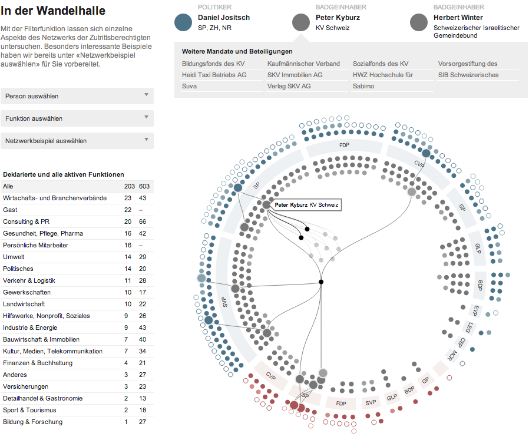

Hinweis: Die interaktiven Inhalte dieser Visualisierung werden von Ihrem Browser nicht unterstützt. Zur optimalen Ansicht verwenden Sie bitte einen modernen Browser wie beispielsweise Google Chrome, Mozilla Firefox oder Apple Safari.

POLITIKER
Politiker
Partei, Rat, Kanton
ZUTRITT
Zutrittsberechtigter 1
Deklarierte Funktion, Kanton
ZUTRITT
Zutrittsberechtigter 2
Deklarierte Funktion, Kanton
Weitere Mandate und Beteiligungen
In der Wandelhalle
Wer ermöglicht Chris von Rohr den Zugang zum Bundeshaus? Welche Interessen vertritt dort Raymond Loretan? Und wie viele Vertreter von Economiesuisse gehen in Bundesbern ein und aus? Die interaktive Visualisierung gibt einen Überblick über die Zutrittsberechtigten und die Interessen, die sie vertreten.
Jeder Parlamentarier kann zwei Personen für den Zugang nominieren. Im äusseren Kreis der Visualisierung sind die Nationalräte in Blau und die Ständeräte in Rot dargestellt. Im inneren Kreis finden die Zutrittsberechtigten Platz. Mit einem Klick erhalten Sie weitere Selektionsoptionen und können so das Netzwerk aus persönlichen Mitarbeitern, Interessens- und Unternehmensvertretern in Bundesbern erkunden.
Mit der Filterfunktion lassen sich einzelne Aspekte des Netzwerks der Zutrittsberechtigten untersuchen. Besonders interessante Beispiele haben wir bereits unter «Netzwerkbeispiel auswählen» für Sie vorbereitet.